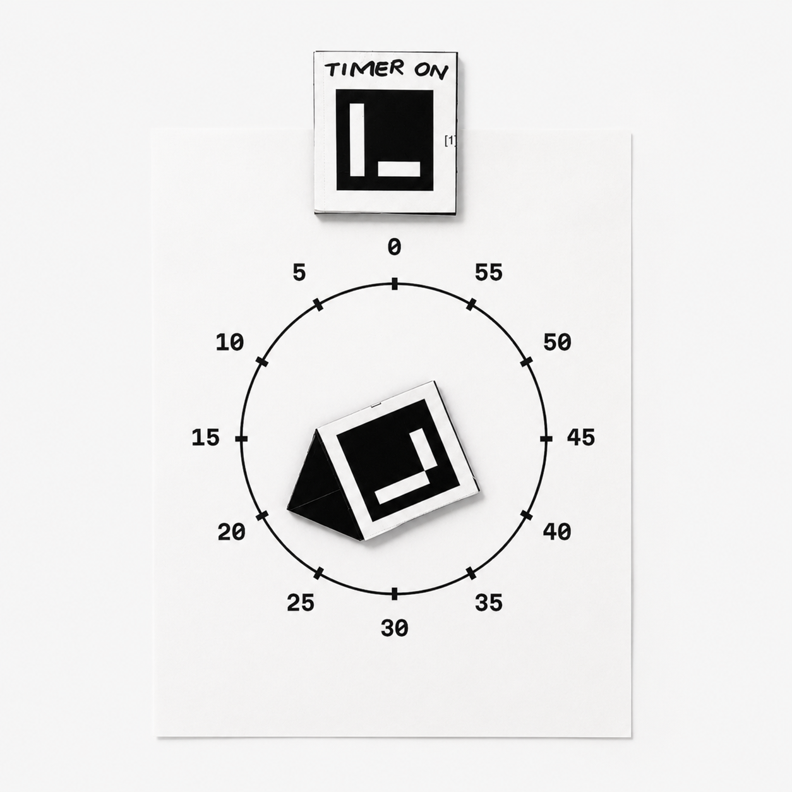
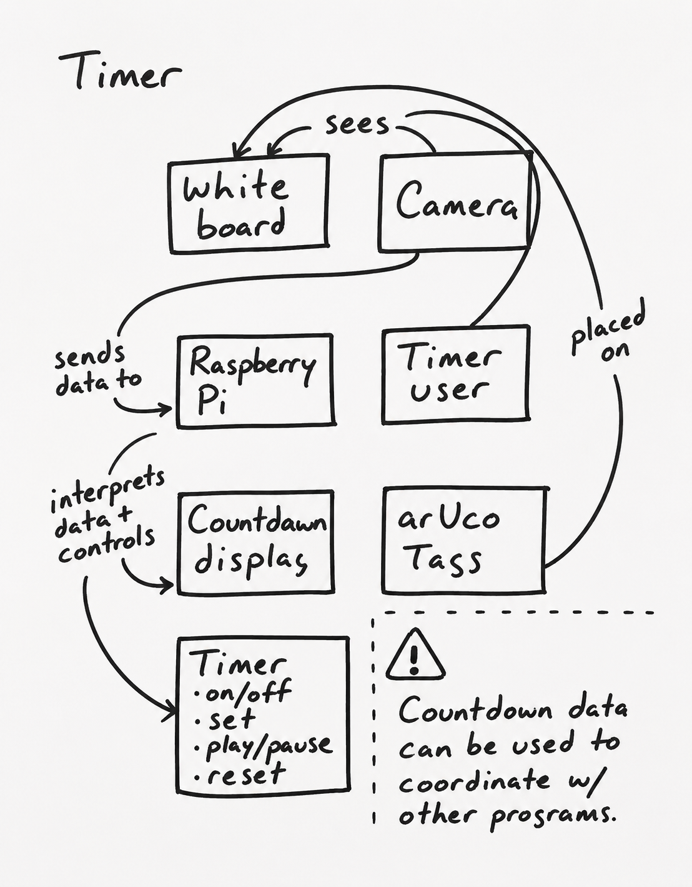
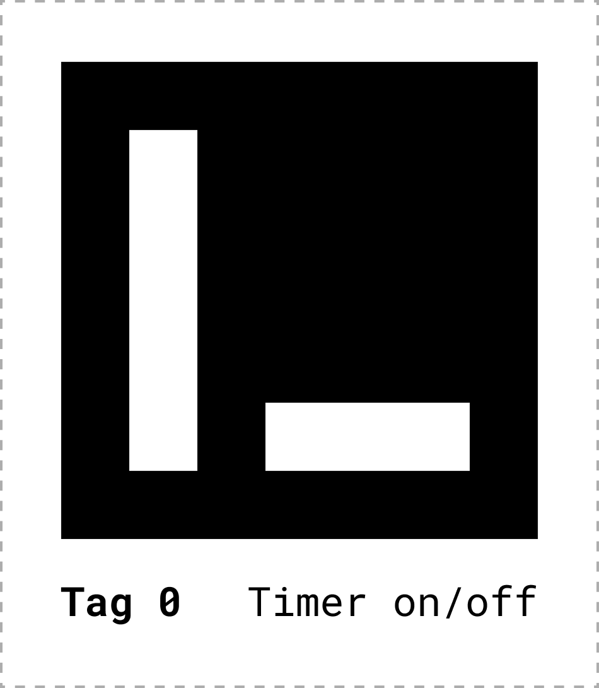
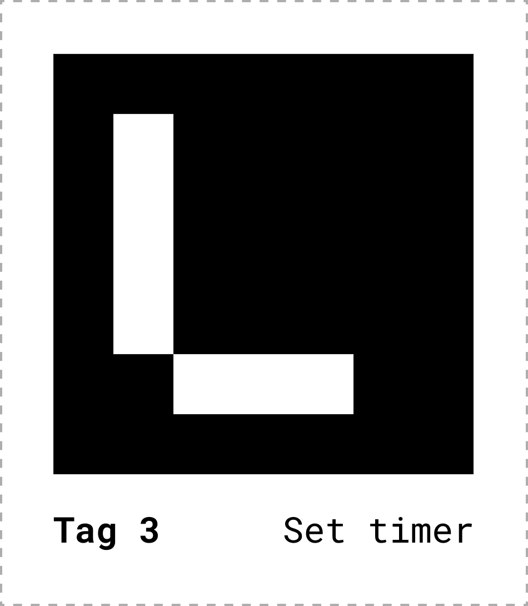
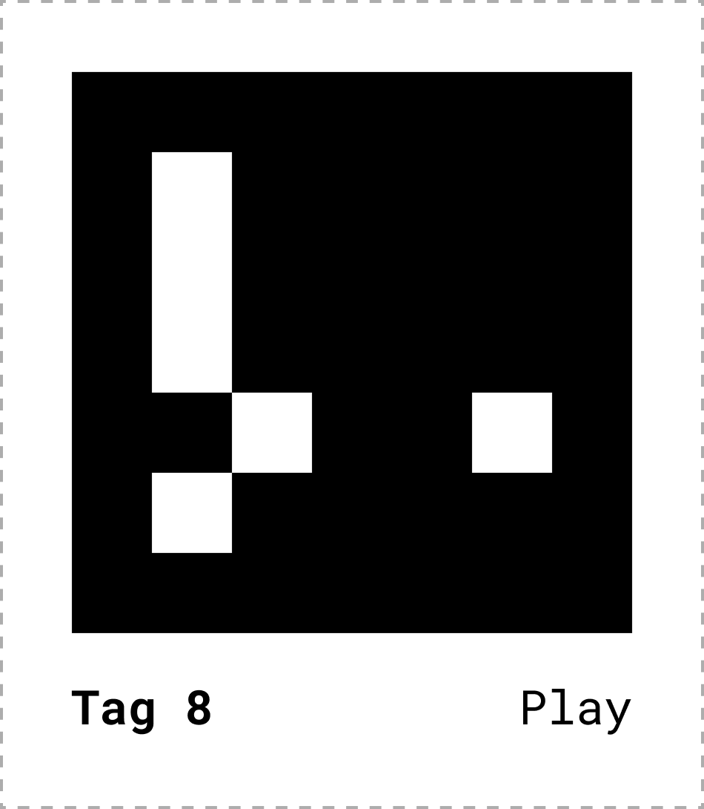
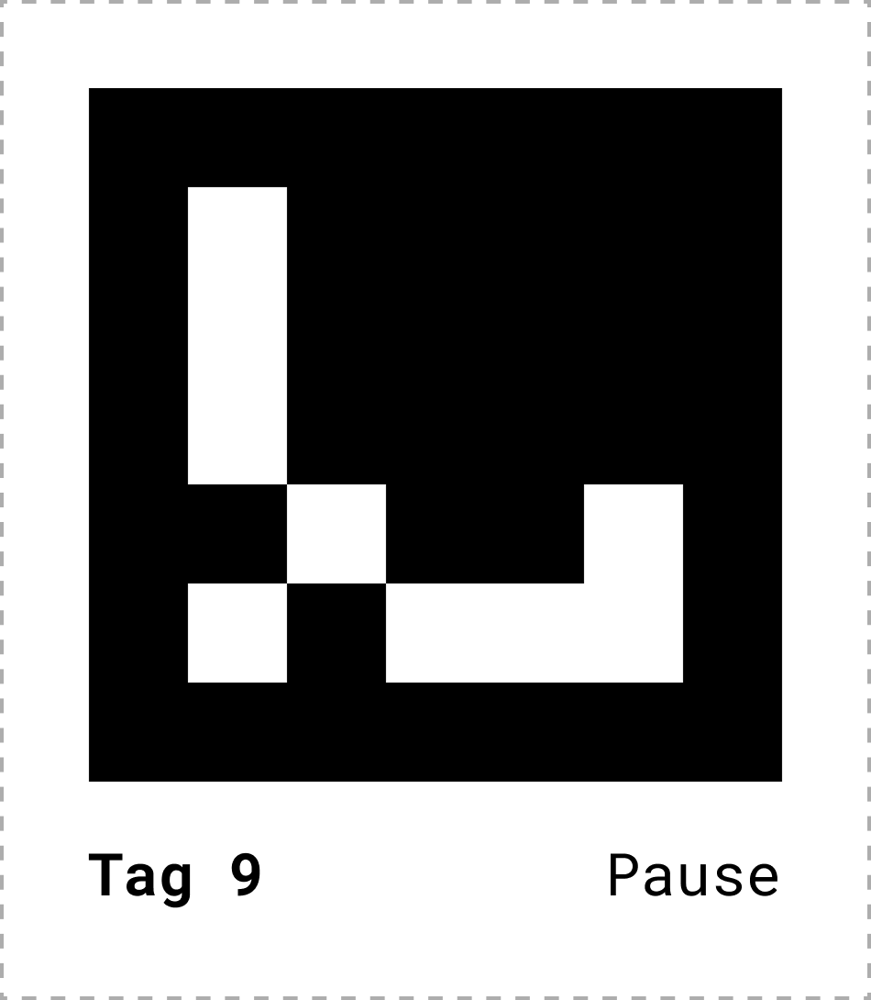
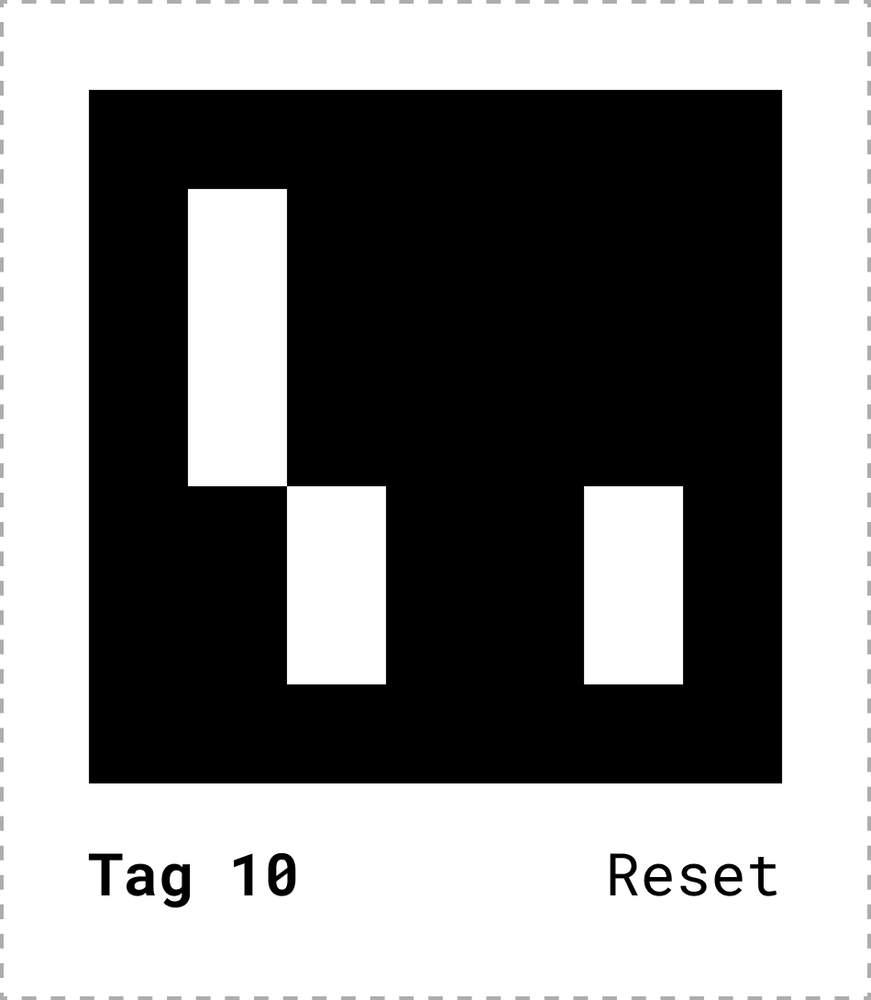
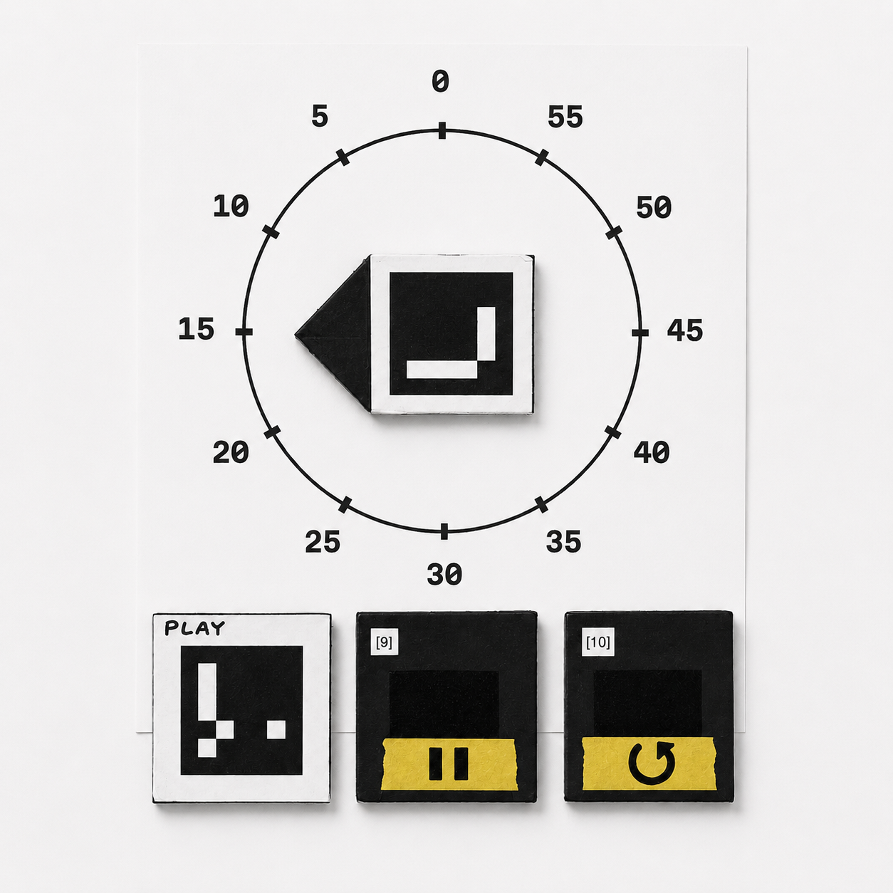

A 60-minute countdown for group work — controlled by magnetic marker tags held in front of a camera. No touchscreen. No app.

The Brief
The classroom context is the whiteboard — the place where ideas land and time gets spent. A timer that lives there, responds to physical objects, and doesn't require anyone to pull out a phone felt like the right fit.
An OAK-D camera (Horizon) sits above the board and watches for marker tags. The countdown displays on any device on the network. The tags are the entire interface.

The Tags
Every action in the timer — turning it on, setting the time, starting the countdown, pausing, resetting — maps to a single physical tag. Place it in the camera's view to activate. Flip it or remove it to deactivate.
The set-timer tag uses rotation: point the arrow toward the dial printed on the board to dial in minutes from 0 to 60.





The most responsive input tested — physical, cheap, precise. Each ID maps to one action. Printed from the ARUCO_ORIGINAL dictionary, mounted to magnetic foam core for whiteboard use.
Demo
Full interaction sequence — on/off switch placed, time set by rotating the dial tag, countdown started with the play tag.
The Test
My wife — a licensed creative arts therapist (LCAT) with no prior exposure to fiducial markers — used the timer cold. Her feedback landed on the central unresolved tension in the design:
"Once I learned the role of each of the parts, it was very clear — but coming in raw... I had no idea that these cards have a function, a flip function."
— Gwen
The tags are optimized for the camera. They are not yet optimized for people. That's the next design problem.

Outcomes
When Bruno — my instructor — used the timer live in a group session, something clicked. Setting the timer became a moment for everyone: watching him aim the dial tag, flip the play tag, and the countdown appear on screen.
A timer that lives in the room turns a solitary action into a shared one. That's the core of what this is.
Next: Rethink the physical tags so they communicate their affordances to people, not just to the camera. Explore sound. Find a home for the camera that doesn't block the board.
Next Case Study
Biome Box →